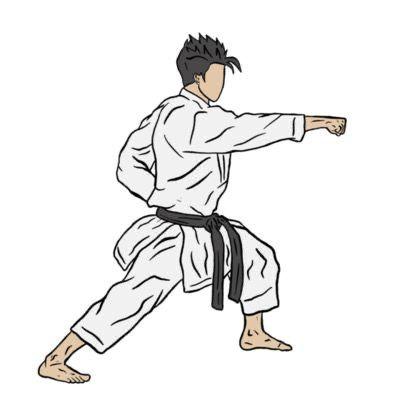
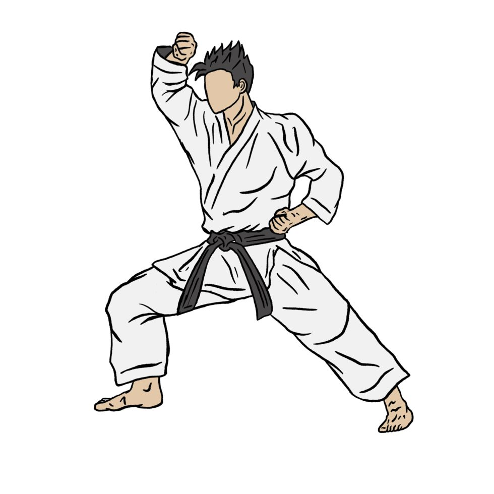
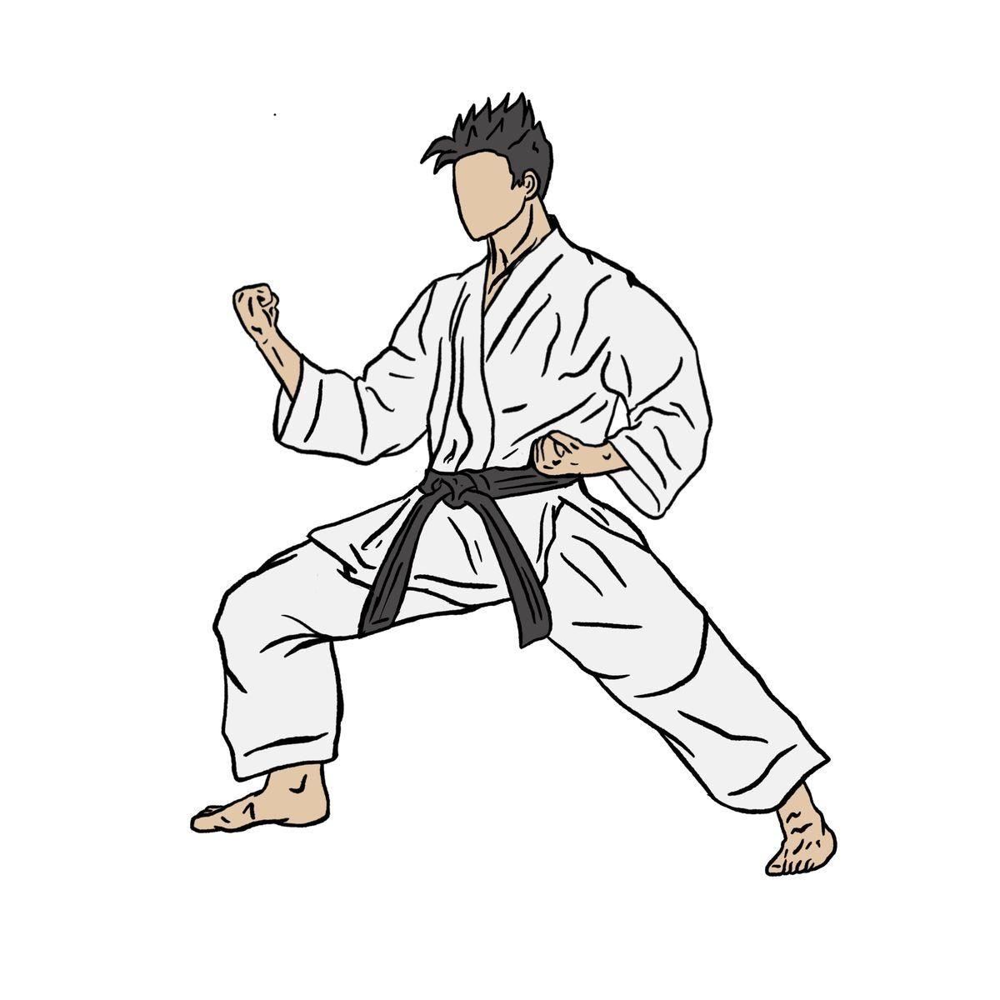
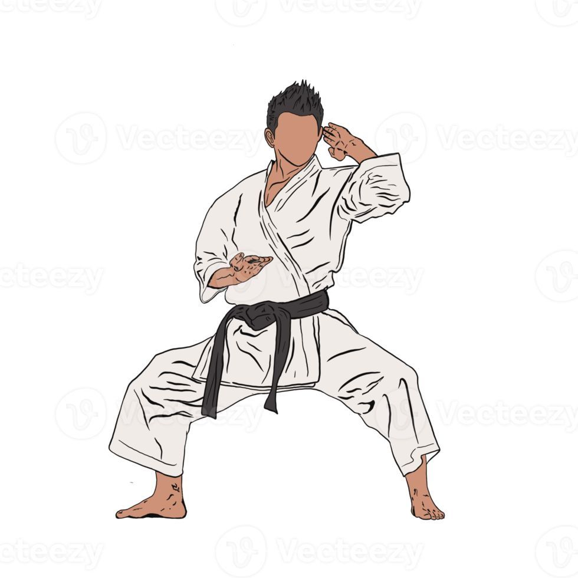
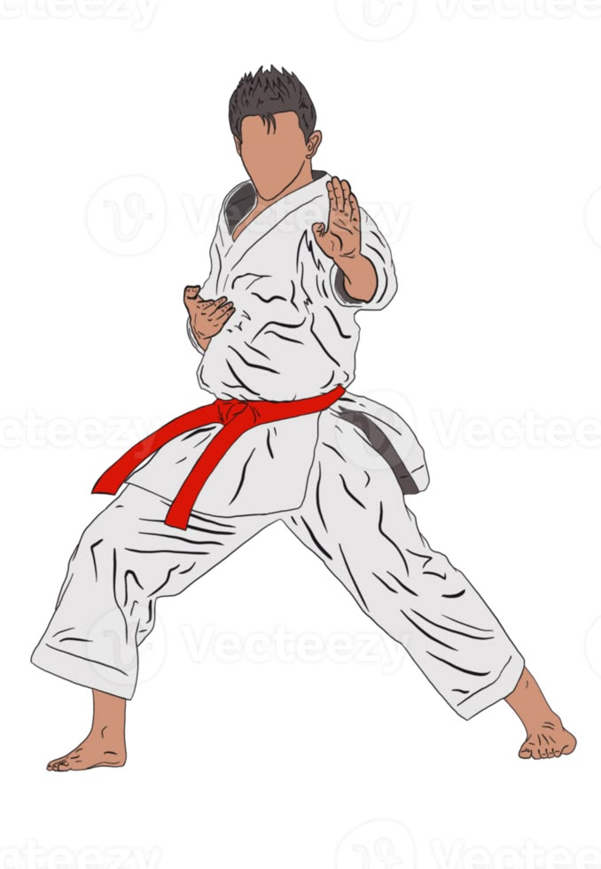
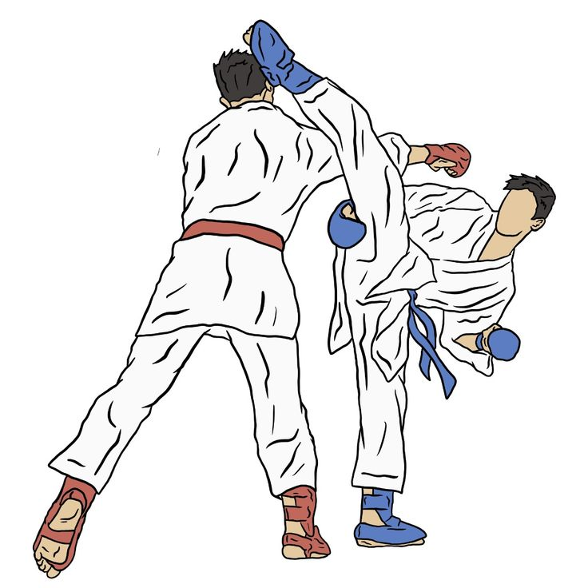
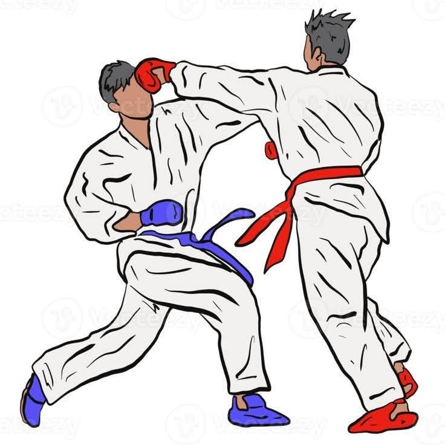

O aprendizado do Karatê-Do sustenta-se em uma tríade fundamental. Clique em um dos pilares abaixo para explorar o conteúdo detalhado de cada pilar:
A palavra Kihon significa literalmente "base" ou "fundamento". É a prática dedicada à repetição contínua dos movimentos básicos para alcançar a precisão mecânica, a postura correta, a geração de potência (Kime) e o controle do centro de gravidade (Hara/Tanden).
Sem um Kihon bem consolidado, as técnicas falham sob pressão no combate e perdem a forma plástica durante a execução dos Katas.



O Kata ("forma") é uma sequência predeterminada de movimentos que simula um combate contra múltiplos oponentes invisíveis que atacam de diferentes direções. Historicamente, os mestres de Okinawa codificavam suas técnicas secretas nos Katas para transmiti-las entre gerações.
No Kata, o praticante desenvolve controle de respiração (Ibuki), variação de ritmo (lento/rápido), direção da força e concentração (Zanshin).


O Kumite é o pilar prático da arte marcial onde a velocidade do Kihon e a estratégia do Kata são colocadas à prova contra um adversário real em tempo real. O foco principal não é a violência, mas sim a percepção de distância (Maai), tempo de reação (Sen) e autocontrole emocional.

